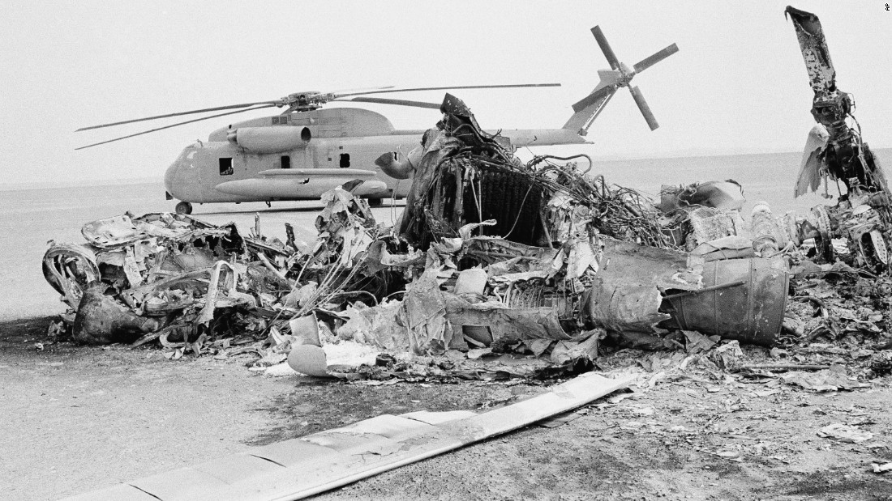
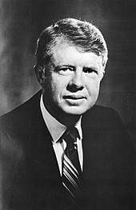
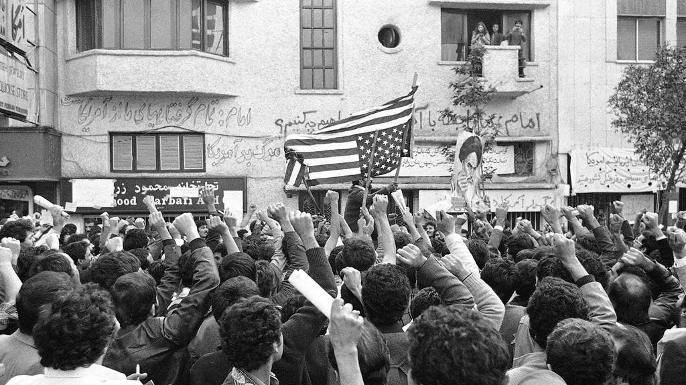
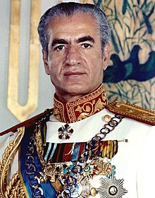
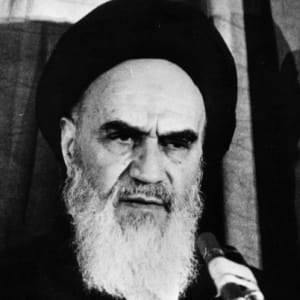
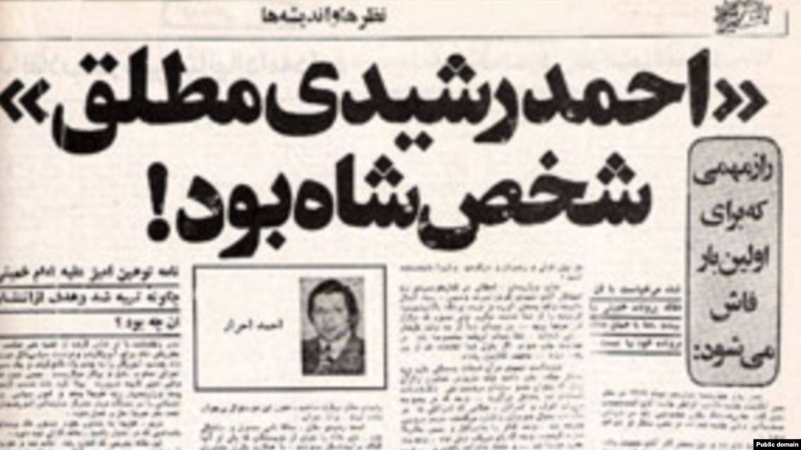
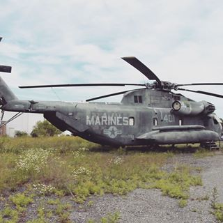
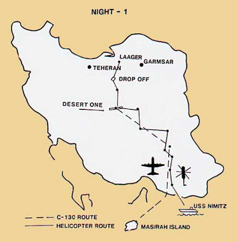
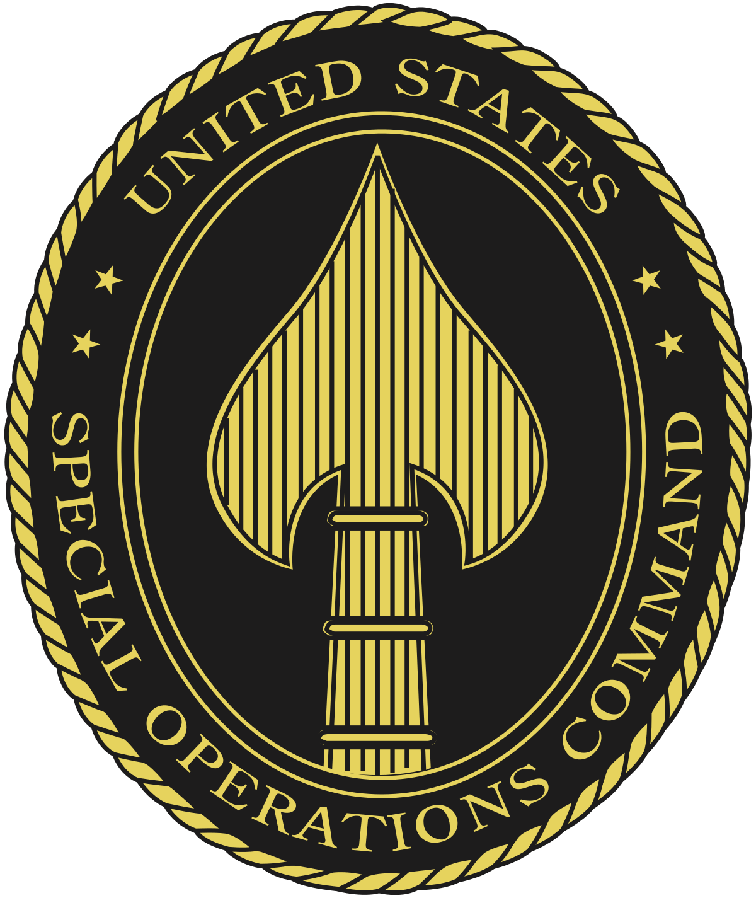

On April 24, 1980, eight RH-53D helicopters rose from the USS Nimitz, which had stopped off the coast of Chabahar, Iran. In total radio silence, the eight marine helicopter pilots, along with several airmen piloting C-130 airplanes, flew toward a refueling base to prepare for the extraction of dozens of American hostages. Hours later, seven out of eight of the helicopters had been abandoned or destroyed, a C-130 lay broken in the dust, and eight U.S. service members were dead. The hostages were never rescued. To add insult to injury, several Iranian civilians were killed when they failed to stop when driving in the direction of landed American helicopters. Numerous operational mistakes were made during Operation Eagle Claw, many of them avoidable. According to Air Force reports released years after the incident, “it would [have] require[d] the proverbial seven simultaneous miracles for Eagle Claw to work”.

The failure of Operation Eagle Claw was, at this point in Carter’s presidency, almost typical of the administration. Struggles in passing coherent economic and energy reforms made Americans question Carter’s leadership ability, which would invite civil war within the Democratic Party.
Jimmy Carter’s handling of the Iran hostage crisis would lead to detrimental effects on his reelection campaign and the Democratic Party at large, some unexpected. The crisis both helped and hurt Carter and was far more significant in the Democratic primaries than the general election. To analyze the effects of the crisis on each event in Carter’s reelection timeline, I observed the public’s reaction through polling statistics at the time of several consequential events. What I found was that the hostage crisis had only a small effect on Carter’s 1980 presidential campaign against the eventual winner, Ronald Reagan, but majorly affected Carter’s race against intra-party rival Ted Kennedy in the Democratic primaries. The crisis made Carter look weak as a leader, but so did Carter’s economic policies and solutions to the energy crisis, which were far more salient in swaying the vote.

It is worth noting that sitting Presidents are not usually primaried, but Carter was. Ted Kennedy feared that Carter’s failures in energy and economic policies would cede control of the White House to the Republicans, and he intended to stop the possibility. It was only on the second-to-last day of the DNC that Kennedy resigned his bid for President. In the end, he was only successful in hindering Carter’s reelection campaign and damaging the Democratic Party.
The Iran hostage crisis first began on November 4th, 1979, when over three thousand militant Iranian students surrounded the American embassy in Tehran and took its occupants hostage. Although several were negotiated for release due to medical and other issues, young Iranian students held the majority of the hostages for 444 days, until the end of the Carter Administration.


Tensions leading up to the Crisis were historical and highly political. It followed the overthrow of Mohammad Reza Pahlavi, a pro-Western monarch installed by the American CIA and British government in 1953 in a coup d’état. Pahlavi’s rule was widely contested, especially after the White Revolution—which was ironically, not an actual revolution—a six-point government agenda launched in 1963 that brought women’s suffrage, among other progressive reforms. Iran was and still is a highly religious nation, adhering to strict interpretations of Shia Islam. Thus, much of the nation's population was guided by Islamic religious leaders, who interpreted political actions in the context of their religion.

During the White Revolution, several of Pahlavi’s enemies appeared and solidified, including Ayatollah Khomeini, a notable scholar who would go on to replace Pahlavi as Iran’s leader after the 1979 Revolution. Khomeini publicly criticized women’s suffrage, claiming that the fate of the nation could not be determined by women, lest Islamic values degrade. Khomeini was arrested for speaking out against the Shah, and was sentenced to 8 months of home arrest. Following further agitation, he was exiled from 1964 until the Iranian Revolution.
Pahlavi was aware of the dissent against him. Aside from using SAVAK, his secret police force, to silence people who spoke too loudly against him, Shah Pahlavi sought to use propaganda to discredit his opponents. On January 6th, 1978, the semi-official Iranian Newspaper Ettela’at published an editorial titled “Iran and the Red and Black Imperialism” insulting Khomeini. The article claimed that the “Red” communists and the “Black” clergy had colluded and chosen Ayatollah Khomeini to oppose the Shah. Since Khomeini had once lived in colonial India, the editorial claimed that he had learned imperialism from the British. These accusations sparked protest three days later in Qom, where Iranian police killed five people. Numerous other incidents - some perpetrated by Pahlavi’s military, others merely thought to be - occurred in the following months, resulting in several martyrs. Opposition toward the monarchy only grew.

Meanwhile, the American government was largely oblivious to the chaos unraveling in Iran. SAVAK was the primary source of American intelligence in Iran, and “reported to Carter in August that Iran ‘is not in a revolutionary or even pre-revolutionary situation”. During the troubles, a former SAVAK leader asked the current one what SAVAK had been doing to address the revolutionary situation. The new leader replied that he had been investing in real-estate. It was self-interested corruption that brought down the Pahlavi regime.
By September of 1978, Iran was in turmoil. Small protests around Iran evolved into broad, nationwide movements against Shah Pahlavi. On September 8th—now known as Black Friday—Iranian security forces opened fire on protesters, killing tens of people and injuring many more. Propaganda about the event filled the streets and spread all over Iran, essentially ending Pahlavi’s rule. On January 16, 1979, the Shah escaped Iran into permanent exile. The Kingdom of Iran was destroyed, and Ayatollah Khomeini declared a new Islamic Republic, the Provisional Government of Iran (PGOI) with Bazargan as Prime Minister. After falling ill, Pahlavi was admitted for medical treatment in the United States in October. Months later, Iran protesters pointed their criticism at the source of westernization—the United States. Having admitted Pahlavi to a stateside hospital was, in the protesters’ eyes, endorsing Pahlavi and his regime. The American embassy in Tehran was an easy target. Thus began the Iran hostage crisis.
At the time of the crisis, President Carter’s administration expected the new republic to condemn the actions of the students and facilitate their release. Although this was true, it held no water. Members of the republic resigned in opposition to the hostage-taking, PGOI dissolved, and power transferred to the Revolutionary Council, which Khomeini headed. The United States did not anticipate such a bold move; Carter did not yet see the “crisis” as a true emergency and expected it to end quickly. This prevented the U.S. from pursuing initial military action and prevented an aggressive strategy to retrieve the hostages until later in the crisis.
Perhaps paradoxically, public opinion of Carter improved. His approval ratings nearly doubled in the month following the start of the crisis. The public saw the administration’s initial non-military approach as calm and controlled, and this was reflected in a survey evaluating public opinion about the President. 60% of respondents believed that the administration should take a wait-and-see approach as they did, and the vast majority of respondents considered Carter to be brave, deliberate, and decisive as of December 1979.
At this point, the administration focused on diplomatic efforts to retrieve the hostages and maintained communication with the Iranian government. On November 7th, President Carter sent diplomats to Iran to deliver a request to release the hostages. The Iranians refused to receive the diplomats. Further efforts were also not successful. The Ayatollah saw the hostage crisis as a way to humiliate the United States and used it as leverage against the Carter administration. Khomeini declared that the new Iranian parliament would dictate decisions regarding the hostages, even though the parliament was not yet established at the time. Clearly, Khomeini wanted to draw out the crisis as long as possible. In the wake of these failed diplomatic talks, the Carter administration had its hands tied. A week after the diplomats were initially sent to Iran, the U.S. froze Iranian assets located in America. This amounted to $10 billion at the time and presented a significant economic burden to Iran. The U.S. also stopped importing oil from Iran, which burdened both countries, since oil imports from Iran accounted for 4% of oil consumed daily. Days later, the Iranians unconditionally released thirteen people to the United States, all women or African-Americans.
Considering public opinion at the time, non-military action was both Carter’s safest bet on retrieving the hostages and the most representative of what the public wanted. Only 31% of Americans supported a possible invasion of Iran over the hostages, while the remainder were strongly against it. In light of the blood shed in the Vietnam war, it is unsurprising that the American people were not excited to enter another prolonged conflict that would send young American men to their deaths.
For the next year, Khomeini built the Islamic Republic by drafting a constitution, electing Bani-Sadr as president, and allowed Iranians to vote in parliamentary elections. The public took Khomeini’s word as gospel; as the supreme religious leader of Iran, Khomeini’s decisions reflected Allah’s intent on the new republic.
During this time, the Carter Administration had begun planning the exfiltration of the Iranian hostages. On April 11, Carter and his National Security Advisor Zbigniew Brzezinski held a National Security Council meeting. There, the officials decided to launch a military rescue attempt. The Secretary of State—Cyrus Vance—was away on leave, so Warren Christopher filled in. He did not inform Vance about the emergency meeting, even after it had elapsed. Vance found out about it only after he returned, astonished that no one had told him about what had transpired. He knew that Brzezinski had used Vance’s absence to finalize the decision about the rescue mission, and informed Carter that he would be resigning his post, regardless of whether the mission succeeded. Although the mission’s military planning had not yet begun, the division in Carter’s Administration showed weakness and foreshadowed a poor political outcome for the mission.

At the time, the Joint Special Operations Command (JSOC) did not yet exist, so the Chairman of the Joint Chiefs David Jones and Secretary of Defense Harold Brown formed an ad-hoc group to plan the extraction of hostages. This would prove to be troublesome, as the group, code-named “Rice Bowl,” involved high-ranking officials from the departments of the Army, Navy and Air Force. This diversity would lead to integration problems and prevent the mission’s success, even in the planning phase. The plan involved distracting Soviet ships away from the carrier USS Nimitz, which carried eight helicopters. Unfortunately, the plan called for RH-35D Navy minesweeper helicopters, which were out-of-date at the time. These helicopters could not be refueled in mid-air, and would necessitate a refueling point near Iran, dubbed Desert One. Had the mission used Air Force helicopters, the refueling point would have been unnecessary. The helicopters would drop Delta Force 50 miles from the embassy and hide elsewhere. In-country agents would use trucks to transport Delta Force to a hideout near the embassy, where they would extract the hostages. Then, Delta Force and the extracted hostages would rendezvous with the helicopters and facilitate extraction from Iranian territory.

Training was lackluster at best. During joint simulations, staff encountered various logistical issues that they never addressed. The refueling point for the helicopters was a major vulnerability. Marine helicopter pilots needed to refuel in a dark desert environment to emulate the nighttime Iranian desert, but had no previous experience flying long-range with night-vision goggles. They also had no experience flying in sandstorms and did not train for the possibility. However, they ended up flying most of the rescue mission’s helicopters. Each component of the mission—land, sea and air—were trained in geographically separate areas, since the branches did not usually work together for such small missions. Thus, no service member saw the full ensemble of people who would conduct the mission. There was no final dress rehearsal, only units that had individually trained with their own people. Nevertheless, leadership proceeded with the mission, destined to fail.
The planning of this mission sounds complex and prone to failure, and it was. A number of vulnerabilities are immediately obvious. Meshing units from four branches together is asking for problems. Logistics for each branch of the military are separate and planning a single chain of supply for a joint-force mission was bound to be complicated. A suitable solution would have been to train a single, cohesive unit to enter Iran and exfiltrate the hostages. The choice of the RH-35D helicopter was questionable at best. They were chosen because newer helicopters would have aroused suspicion when stored aboard the Nimitz, and the Soviets could have caught wind of the operation. The RH-35D unfortunately brought more drawbacks than benefits. Even a simple risk assessment could have concluded that the small risk of being discovered by the Soviets was outweighed by the massive risks of an additional refueling point. This extra step would require additional fuel-transport C-130 aircraft, ground security and lookouts at the refueling site, extra time, and an additional takeoff and landing, which carry some risk in desert environments. If the joint force instead painted the new helicopters to look like RH-35Ds, planners could have mitigated both the risk of discovery by the Soviets and the need for a refueling station.
The night of Operation Eagle Claw, eight helicopters left the USS Nimitz, 60 miles off the coast of Iran. Two hours into the flight, one of the helicopters experienced a suspected rotor blade crack. It was abandoned, and another helicopter picked up the crew. Shortly after, the seven remaining helicopters experienced a sandstorm, known in Iran as a “haboob,” which can cause wind speeds of over 100mph and obscure vision. It did just that, and the helicopters dispersed. In the frenzy, one of the helicopters experienced electrical problems, and needed to pull out. It could not notify the rest of the force due to poor communications setup. Only six helicopters made it to Desert One. Upon arrival, another helicopter experienced failure with its hydraulic system, and was “deadlined.” With only five helicopters, Colonel Beckwith—the ground assault commander—deemed the mission a failure and ordered a retreat. The failures would not end there. While pulling out, inclement weather caused a helicopter pilot to lose control and crash into one of the C-130 planes. Eight soldiers were killed.
In their hasty retreat, the U.S. forces failed to collect sensitive documents from the downed helicopters, which included the names of Iranians working for the United States. These contacts would have facilitated the extraction of the hostages; instead, they were now at risk of prosecution by the new revolutionary government. Worse, the Iranians took the remains of the dead American soldiers and displayed them at the embassy in a shockingly barbaric manner. The U.S. had seldom experienced propaganda of this level of incivility, but these sorts of displays would become commonplace in American dealings with radical Islamists.
Khomeini capitalized on the debacle in a speech over Iran’s state-sponsored radio:
The world-devouring America, proud of her satanical equipment, had tried to play with fire and had sent forces to the desert. However, the guardian and keeper of this uprisen nation, who from the beginning of this revolution has taken this revolution under the wing of his protection, has inflicted a defeat and flight upon the Americans and their mercenaries unprecedented in their history and the history of the world.
Operation Eagle Claw had been months in the making, but its failure would represent one of the great embarrassments of the Carter administration. Americans reacted negatively to the failed rescue attempt as expected. Military leadership criticized one another for the poor planning efforts, but ultimately abandoned a new, better plan. The embarrassment would haunt Carter for the rest of his presidency, as he describes in his memoirs. “I would walk in the White house gardens early in the morning and lie awake at night, trying to think of additional steps I could take to gain their freedom without sacrificing the honor and security of our nation”.

As an aside, the failure of Eagle Claw demonstrated the need for a joint command to execute high-risk missions. Special Operations Forces had declined since the beginning of the 1970’s due to budget cuts and distrust between conventional forces and irregular soldiers. Eagle Claw reminded the Department of Defense that the United States needed SOF back. In 1982, Army Chief of Staff consolidated several Army SOF units to form the 1st Special Operations Command. The United States Special Operations Command (USSOCOM) expanded from there.
Carter’s embarrassments did not start or end with the hostage crisis. Domestically, the public faced a variety of other emergent issues. High gas prices and inflation plagued the United States through the Carter presidency, even though these were not necessarily his fault. To the average American, gas prices and inflation were far more relevant in their daily lives than the Iran hostage crisis halfway around the globe. Long lines at gas stations and high unemployment plagued people who were just trying to get by. Carter’s failure to ameliorate these conditions tarnished his reputation as a leader and would prove to damage his campaign for reelection beyond recovery.
The troubles with gas prices began in the early ‘70’s when OPEC saddled the U.S. with an oil embargo, with America’s pro-Israeli foreign policy as justification. This showed just how dependent the United States had become on Arab oil. However, the broader issue of the energy crisis began in the late 1960’s, when inflationary pressures resulted in the passage of consequential economic policies in the 1970’s. Prior to 1970, the United States had established import quotas on foreign oil in order to protect domestic production. However, oil companies gradually found refinement of crude oil overseas to be preferable, since land was cheap in the Middle East. Exploratory mining for oil and gas in the United States dropped, and so did investment into these aspects of the American economy. The manipulation of the market in favor of domestic oil producers had made Americans expect a certain supply of oil, which was put into jeopardy starting in 1970, when the import quotas were removed. What remained was an American population that owned a large amount of automobiles and constantly consumed oil. Economists understood the market manipulation to be misguided; however, the elimination of import quotas on oil made the United States more dependent on not just foreign oil, but expensive Arab oil. Although Carter—and his predecessor Gerald Ford—was responsible for none of this, the dependence put Americans in a difficult situation, even though most voters were not concerned at the time. Nevertheless, when President Carter came into office, he immediately began work on new energy policies, seeing it as one of his top priorities.
By his 90th day in office, Carter had produced an energy plan. Carter framed the energy crisis as a moral issue, naming the cause as American wastefulness and extravagance. The head of the Federal Energy Administration at the time, John O’Leary, claimed the energy crisis “[was] a resource problem. [The American government has] shot the resource”. Carter’s policies followed this assertion, leading to policies encouraging restraint in the use of natural resources. The plan involved new taxes on gas and oil, strict controls on strip mining, requirements for industries to use the “best available technology” to process and burn fuels, price freezes on oil and gas, and other measures in reducing demand.
Despite Carter's enthusiasm, Congress rejected most of his energy plan. There were several reasons why nearly the whole program cleared the House but not the Senate, many of them political in nature. The program was rushed and written largely in isolation, so it contained several technical flaws that undermined legislators’ confidence. Those who wrote the program failed to consult experts in the White House who could have reduced or eliminated technical mistakes, especially those regarding tax reform. Carter’s team also fell short in selling the program since it was so large and complex. No one person could explain the entire thing, and many struggled to understand the relevance of portions they were not experienced in. Most importantly, the program lacked a consistent constituency. No single party supported every provision, and Carter’s combination of compromises between free-marketers and interventionists ended up alienating both. These factors, along with special interest groups that lobbied the bills thoroughly, ultimately guaranteed the failure of Carter’s energy proposal.
Aside from the failure of the program, its provisions were guided by the assumption that natural resources were in short supply due to overconsumption, and not because of the true reasons of market manipulation and lack of investment into domestic drilling. Had Congress approved Carter’s plan, it could have proved extremely damaging to the American economy. The proposed tax on domestic oil drilling would have been particularly counterproductive. Instead of increasing the supply of oil and gas, Carter’s plan would have artificially decreased the demand of both. Instead of reversing past interventionist policies, Carter’s plan involved the passage of over 100 new federal laws, some of which would discourage domestic production of crude oil. Many costs of the program would be passed to the general public; for example, passage of gasoline taxes would have taken over $50 billion from the public. New cars that used more fuel on average would have been priced higher as per the “gas guzzler” tax. Facilities processing oil and natural gas would be converted to coal-burning plants, further incurring costs in the range of tens of billions of dollars. Using legislation to control the economy of natural resources instead of letting the market find prices for them would only have prolonged shortages. Had Carter proposed deregulation—like Reagan later would—perhaps his program would have passed through both the House and the Senate. Although his intentions were noble, Carter’s hasty solution to the energy crisis demonstrated a lack of understanding of the American economy and human behavior with regards to the consumption of natural resources.
The public response to Carter’s proposed plan was a mix of disapproval and confusion. Carter presented the proposal as a moral challenge for the United States, but many of his constituents simply thought of it as madness. The debacle was one of the first in a list of many mistakes that tarnished Carter’s image as a strong leader.
Carter’s opponent Reagan’s presidential campaign began on November 13, 1979 when he announced to the nation he was running for president. In his initial speech, he voiced his chief concern about stagflation in the economy:
No problem that we face today can compare with the need to restore the health of the American economy and the strength of the American dollar. Double-digit inflation has robbed you and your family of the ability to plan. It has destroyed the confidence to buy and it threatens the very structure of family life itself as more and more wives are forced to work in order to help meet the ever-increasing cost of living. At the same time, the lack of real growth in the economy has introduced the justifiable fear in the minds of working men and women who are already overextended…
Reagan blamed the federal administration for the economic troubles, citing federal overreach in economic affairs. He said the government “overspent, overestimated, and over-regulated”, calling instead for reduced taxes to encourage economic growth. With regards to energy, Reagan lamented American dependence on foreign oil, and proposed “more exploration and development of oil and natural gas here in our own country”. Reagan did not mention the Iran hostage crisis in this statement. A former actor and powerful speaker, Reagan had the advantage of charisma over his opponents.
On the presidential trail, Reagan faced several challenges. In the primaries, his first opponent was George H.W. Bush, former director of the C.I.A. and chairman of the Republican National Committee. The Republican Party initially favored Bush as a moderate Republican, seeing Reagan as more dogmatic and representative of the conservative extreme. Bush campaigned first in Iowa, where he criticized Reagan’s proposed policy of cutting taxes while expecting economic growth, dubbing it “voodoo economics”. Bush came out ahead in Iowa, and remained the Republican frontrunner until the New Hampshire caucus. He and other candidates derided Reagan about his advanced age. At his first inauguration, Reagan was 69 years old, and his opponents would use this against him on the campaign trail. Reagan’s campaign in New Hampshire would dash those claims. During the New Hampshire Presidential Primary, The Telegraph hosted a debate on which candidates should be able to participate. Following a small disagreement, the moderator ordered the sound man to turn off Reagan’s microphone, to which he stood up and declared "I am paying for this microphone, Mr. Green!" This bold statement gave Reagan an immediate advantage over his GOP opponents, and resulted in the beginning of a gradual rise in the polls. At the time of the GOP convention, Reagan had almost 43% of the national vote, which rose to about 48% after consolidation in the GOP following the convention. Bush’s defeat prompted Reagan to choose him as his vice president in order to appear more moderate, and his constituency grew.
Carter’s campaign was troubled from the beginning. Facing issues like high unemployment, high inflation, and high gas prices that motivated “lethal confrontations among motorists,” he was in a relatively poor spot for reelection. On Independence Day, Carter disappeared from the public eye. Ten days later, he returned from Camp David to the White House, where he gave his famous “malaise” speech, in which he described the degradation of American values and the effects of consumerism on the nation’s morals . Carter berated American materialism, a common factor that he saw as a blight to the welfare of the nation. He called for a “rebirth” of the American spirit as a national venture, an effort supported by every household. His speech was well received, and Carter spiked in the polls. What compromised his popularity was what followed immediately after: Carter fired every single member of his cabinet. His motivation to do so were less than clear at the time, but it was since discovered that Carter’s chief of staff Hamilton Jordan sent him a memo shortly after the malaise speech. In a talk on National Public Radio (NPR), journalist Jon Ward revealed “Jordan basically recommended that he fire all these people to show strength”. The public viewed the move as sudden and capricious, a sign of a president that was unsure of what he should do in a panic. Public approval declined again.
At the beginning of the Democratic primaries, Ted Kennedy was Carter’s most formidable opponent. Following Kennedy’s scandal at Chappaquiddick ten years prior, the presidential bid would be his most bold pursuit.
It's a year after [Robert Kennedy’s] death…Teddy and a couple other older guys about his age get together with, I believe it was, four young campaign workers who were all female from Bobby's campaign… None of the wives were there, so that obviously raises some questions…And Teddy - and according to everything we know - leaves around 11 o'clock with Mary Jo Kopechne in his car. You know, the car goes off a bridge, Dike Bridge, into a channel. And in the morning, Mary Jo Kopechne is in the car dead…Teddy did not call the police until, you know, mid-morning, around 10 a.m. or so, after this accident occurred, you know, somewhere around midnight or 1 a.m. And so, he could have very easily gone to jail.
Democratic constituents had either forgotten about the scandal or no longer felt it was relevant. In 1979, the polls showed Kennedy was in the lead. Kennedy was ahead of Carter 2 to 1 in the primary, and Carter’s approval rating was the lowest of any president at that point in history. What happened next goes against conventional American wisdom; the Iran hostage crisis helped Carter. At the start of the crisis, the public supported Carter in his efforts to diplomatically resolve the crisis, and news coverage was overflowing with whatever images and information reporters could get their hands on. ABC’s Nightline gave daily coverage on the crisis, and the blame for the situation did not lie on Carter. The coverage blocked Kennedy from getting airtime, preventing his campaign from proceeding after Carter’s rise in the polls following the start of the crisis. This turning point signaled the beginning of the end for Kennedy, who would lose the nomination to Carter at the DNC. He does not go down without a fight and takes the loss personally. Kennedy was sour and his campaign team reflected this with petty shenanigans at the DNC:
Before the platform speech, tensions were so high that high-ranking members of the dueling factions almost got into a fistfight. Harold Ickes, who was running the floor operation for Kennedy, used an obscure procedural rule to call a halt to the afternoon floor proceedings. It was nonprime-time programming, but Ickes’ delay would muck up that evening’s televised schedule. It was a gesture done purely out of spite. “We just said, ‘F--- ’em.’ This had turned into a real grudge match,” Ickes said in an interview. “I mean, we weren’t thinking about the country. We weren’t even thinking about the general election. It was, ‘F--- ’em.’ You know? To be blunt about it”.
Kennedy called Ickes and ordered him to continue the convention, most likely to avoid investigations into the incident and public backlash. At his platform speech, Kennedy rebuffed many of Reagan’s arguments, describing him as “no friend of labor . . . no friend of this city and our great urban centers across this nation . . . no friend of the senior citizens of this nation . . . no friend of the environment.” However, Kennedy avoided speaking directly about Carter, instead choosing to distance himself. In his closing speech, he described the trials and challenges on the campaign trail, reminding the audience of the untimely deaths of his brothers John and Robert and broadening his campaign to an expression of values rather than a race for the presidency. “A few hours ago, this campaign came to an end. For all those whose cares have been our concern, the work goes on, the cause endures, the hope still lives, and the dream shall never die”. The speech evoked sympathy for Kennedy and resulted in major concessions by Carter’s campaign. Carter was essentially forced to adopt a $12 billion stimulus program and a call for a jobs bill—two of three of Kennedy’s proposals. Kennedy’s staff were certainly petty, but Kennedy himself may have just been pushing for the values that he represented. Even so, forcing Carter to adopt parts of Kennedy’s campaign—lest Kennedy’s constituency fail to support Carter—was a surefire way to weaken Carter’s chances in the general election, since Carter had initially opposed the proposals.
Thus, in contrast to Reagan’s strategy of choosing Bush as his running mate, Carter resisted Kennedy’s ideas. This caused infighting within the Democratic Party that simply did not exist with the Republicans, who had consolidated after the RNC. Kennedy’s intent to run for president irreparably damaged Carter’s campaign and weakened the Democratic Party even before they had to face the Republicans. Although the hostage crisis initially helped Carter, it is true that the failed rescue attempt hurt him. However, by the end of August, Carter and Reagan commanded almost equal amounts of projected American votes, with Carter at roughly 36% and Reagan at 38%. Their numbers steadily rose together until the debate in October 1980, which was considered to be a victory for Reagan. He rose to 45% while Carter dropped down to 35%. On election day, Reagan won by a landslide. With his 489 electoral votes to Carter’s 49, Reagan received the highest number of electoral votes of a non-incumbent candidate.
Between September 23rd and 25th, 1980, CBS and the New York Times conducted a national poll, asking respondents what is the greatest issue affecting the United States. 32% believed it was inflation, 21% the economy, 9% the Soviet Union and war, and only 5% Iran and terrorism. Clearly, the public was not thinking about the Iran hostage crisis. After daily coverage about the crisis, Americans were desensitized to it. However, stagflation and its effects were a daily struggle for many and would affect them in the long term much more than anything happening in Iran would.
Knowing that Reagan promised to change the course of the economy motivated voters to choose him. Carter’s poor handling of economic and energy policies made the public perceive him as an inept leader. This guaranteed Reagan’s victory in the general election.
The effects of the hostage crisis cut in different directions. Certainly, the crisis aided Carter in the Democratic primaries. Coverage of the hostages in the news meant that Kennedy did not get enough time on American television. Without the crisis, it is entirely possible that Kennedy would have won the nomination and battled Reagan, but to say he would have won is pure speculation. However, it stands that the crisis did influence the election, even if it was in an unexpected way. In the general election, the public saw the American economy as more important, and hardly any voters considered the hostage crisis to be relevant at all. The failure of the rescue attempt further tarnished Carter’s image as a leader, and may have helped Reagan secure his victory, but its effect would have been small in comparison to policy considerations. In the end, it was the division within the Democratic Party that lost Carter the election, not the Iran hostage crisis.∎
Citations can be found in the downloaded article